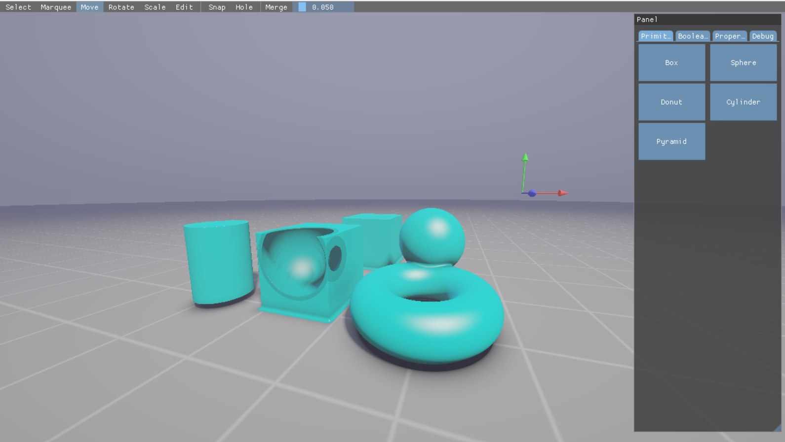

Morphon
A Vulkan SDF modelling experiment: analytic primitives, smooth blending and live subtractive editing without rebuilding a triangle mesh.
Procedural modelling inside a real editor
01Five SDF primitives
Box, sphere, torus, cylinder and cone/pyramid evaluated analytically in GLSL.
02Solid + void
Smooth-union additive shapes and subtractive shapes that cut live holes.
03Selection
CPU ray-march picking, single selection, marquee multi-selection and hide/show state.
04Editing
Axis-constrained move gizmo, property editing and direct box-face dragging.
05Placement preview
Shape-aware wire preview, snap-to-grid and a solid/void mode before placement.
06Procedural shading
Finite-difference normals, two lights, soft shadows, AO, grid and fog.
07Vulkan foundation
Swapchain, descriptors, command buffers, fences and runtime GLSL compilation.
08Rotate + scale
Buttons and gizmo meshes exist; manipulation is not wired through yet.
09Intersection
The UI exposes it, but the current apply path behaves as subtraction.
CPU interaction, GPU field evaluation
What I chose, and what it costs
| Decision | Alternative | Reason / trade-off |
|---|---|---|
| Analytic SDF objects | Triangle meshes + CSG | Live booleans and blending with parameter changes; per-pixel field evaluation is expensive |
| Fragment ray marching | Compute + output image | Small direct prototype; compute would give more explicit scheduling and tiling control |
| CPU SDF mirror | GPU ID/readback | Immediate world hit without synchronization; duplicated rules can drift |
| SSBO object array | One draw per object | One full-screen draw evaluates the whole scene; currently scans up to 256 records |
| Raster gizmos | SDF gizmos | Precise conventional handles, separate from modelling semantics |
| Runtime glslang | Offline-only SPIR-V | Fast shader iteration for a tool; adds startup and dependency cost |
The distance field chooses every safe step
Booleans are arithmetic, not topology edits
One object = four aligned 16-byte groups
Strong prototype, clear next bottlenecks
Live procedural booleans
Moving a primitive updates 64 bytes; there is no topology rebuild.
Full-screen scene
One generated triangle launches the field evaluation.
Pointer-driven CPU query
Placement ray march reruns only when its inputs change.
Current scaling limit
Pixels × march samples × objects; add bounds/BVH before growing the scene.
Unify CPU and GPU rules
Picking must apply the same transforms and operations as rendering.
Finish exposed tools
Rotate, scale and true intersection need real interaction semantics.
No frame-time improvement is claimed: the repository contains architecture evidence, but no controlled benchmark.